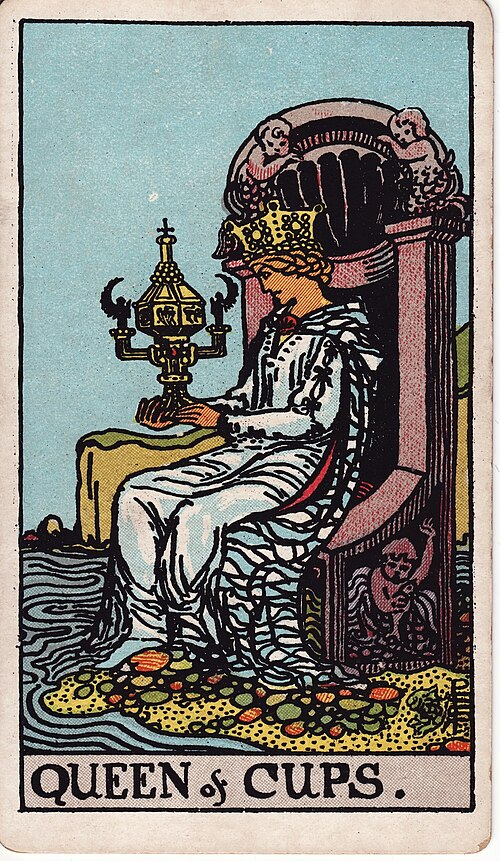

Lesson 02 · Tarot
The Anatomy of the Deck
Seventy-eight cards feels like a crowd until you see the grid underneath: four small families of fourteen, and one parade of trumps. Ten minutes of sorting puts the whole architecture into your hands, where it stays.
By the end of this page you can sort a shuffled deck into its five natural piles without hesitating, state the structure from memory — 22 trumps over four suits of fourteen — and place any card someone holds up into the register it speaks at, before you know what a single symbol on it means.
Pick the deck up and weigh it in your hand. Seventy-eight cards is a genuinely large object, half again the size of anything you have played games with, and the natural worry is that each one will have to be learned separately. Nobody does that. Underneath the pile sits a grid so regular that a single sorting session will put the architecture into your fingers, and the architecture in turn decides what kind of statement any card is even able to make.
One diagram holds the whole deck
You already met the top split in lesson 1: twenty-two trumps, invented in the 1440s as a fifth suit that beats the other four, sit on top of an ordinary four-suit pack of fifty-six. The ordinary pack is where the regularity lives. Each suit runs from Ace to Ten and then hands over to four court cards — Page, Knight, Queen, King — so every suit holds fourteen, and 22 + 4 × 14 gives you the whole deck.
The grid also explains the deck you already own. The pack you play poker with settled on King, Queen and Jack for its court, while the tarot game kept a mounted Knight as well — so if you lift the four Knights out of the fifty-six, what remains is structurally the modern 52-card pack, with the Page answering to the Jack. Far from being an exotic stranger, the tarot deck is your familiar pack plus one extra rank and one extra suit.
The suits are older than the trumps
Wands, Cups, Swords and Pentacles sound like tarot's private vocabulary, but half of those names are Victorian paint on much older signs. The four-suit pack that reached Europe in the 1370s arrived from the Mamluk world already carrying cups, coins, swords and polo-sticks; since Europe had no polo, the sticks were redrawn as plain batons, and in that Latin form the four signs are still on Italian and Spanish tables today. The trionfi designers of the 1440s were adding their fifth suit to signs that were already old.
A largely intact Mamluk pack, made in Egypt or Syria and kept in the Topkapı Palace Museum in Istanbul, preserves the suit system Europe imported: cups, coins, swords and polo-sticks — recognisably the ancestors of the suits in your hand. As coppe, denari, spade and bastoni, the same four signs still play tarocchini in Bologna. The Topkapı cards · Trionfi.com on early packs
What the occult tradition inherited, it renamed. Your deck's labels differ from the game decks' in three places, and each change has an author:
| On your cards | On the game tables | Who changed it |
|---|---|---|
| Wands | Batons or staves (bastoni) | The Golden Dawn's curriculum, kept by Waite |
| Pentacles | Coins (denari) | Lévi's talisman word pantacle, adopted by the Golden Dawn |
| Major / Minor Arcana | Trumps and suit cards | Paul Christian, 1860s Paris |
The Golden Dawn's internal textbook, Book T, deals the four classical elements across the suits — Wands are Fire, Cups are Water, Swords are Air, Pentacles are Earth — following the scheme Lévi sketched in 1855. No card-player in the first four centuries ever heard of it, yet it is the hardest-working line of doctrine in modern tarot: most "card meanings" you will ever read amount to this table plus a number. Lesson 3 is entirely about how it works.


Fourteen to a suit: the numbers and the court
Within a suit, the ten numbered cards announce themselves plainly. Each of the Two through Ten carries a roman numeral at the top, and Smith kept a card-maker's discipline inside her scenes: the emblem appears exactly as many times as the number says, so the Three of Swords holds precisely three swords. The Ace and the four court cards carry printed name banners instead. Those two printing habits are your whole toolkit for the sorting drill below.
The court is where tarot quietly made history of its own. The Latin court that came with the imported suits ran King, Knight and Page — an all-male institution — and it was the tarot designers of the 1440s who added a Queen to each suit, making the fourteen-card suit as much their invention as the trumps themselves. Dummett's archival work is the source for both. Telling the ranks apart takes one glance in any deck descended from this one: Pages stand on their own two feet, Knights ride, and Queens and Kings hold thrones.




The register rule: what structure alone tells you
All of this sorting pays off in a rule you can use tonight. Waite himself divided the deck into a greater and a lesser arcana and told his readers frankly which half he thought carried the philosophy; modern reading practice inherits that split as a difference of scale. It is a convention rather than a law — but it is the convention your deck was drawn in, and it means the deck's architecture hands you the first line of any interpretation for free:
| You are holding | Before any meaning, it already says |
|---|---|
| A trump | Something at the big register — an archetype, a threshold, the story's weather. The game's power ranking became the reading's scale of importance. |
| A number card | An everyday-scale situation inside one domain of life. The suit names the domain (lesson 3), the number names the stage (lesson 4). |
| A court card | A person, or a characteristic way of operating — the suit's material handled in one of four postures (lesson 5). |
So when the Tower, the Seven of Cups and the Knight of Cups land together in a spread, you can already rank them before knowing a single meaning: a structural event, a Tuesday-sized muddle, and somebody's way of showing up. That reading of scale costs you nothing, because the architecture pays for it. The full inventory lives on the printable Map of the 78 Cards.
Do this now · with your deck
This is a sorting lesson, so the cards do the teaching. Ten minutes.
- The five-pile sort, against the clock. Shuffle thoroughly, then deal face-up into five piles: trumps, Wands, Cups, Swords, Pentacles. Your helpers: trumps carry a numeral and a title, Aces and courts carry name banners, and the Two through Ten wear a roman numeral at the top. Note your time.
- Audit the piles. Count them: 22, 14, 14, 14, 14. If a pile is off, find the stray by recounting emblems — Smith drew exactly as many as the number claims.
- Rebuild one suit in order. Ace to Ten, then Page, Knight, Queen, King, saying the ranks aloud as you place them. Aloud matters; it is the difference between recognising the order and producing it.
- Remove the four Knights. Look at what remains of the fifty-six: Ace to Ten, Jack-in-all-but-name, Queen, King — the poker pack you have known all your life. Put the cavalry back; the game needs it.
- Line up the four Aces. Study the scenery behind each emblem — sprouting leaves, pouring water, bare grey air, a tended garden — and say the four Golden Dawn elements once, remembering that this pairing was dealt out in 1888, not discovered.
- Speed round, and again tomorrow. Flip twenty random cards one by one, calling "pile plus rank" — trump, Six of Wands, Queen of Swords — at under two seconds each. Rerun step 1 tomorrow before the next lesson; the spacing is what moves this from fluency into storage.
Check yourself
One attempt per question, no scrolling back up. A wrong answer here is worth more than a lucky one.
A complete tarot deck breaks down as…
- 22 trumps and 56 suit cards
- 26 trumps and 52 suit cards
- 24 trumps and 54 suit cards
22 + 56 = 78, and the fifty-six divide into four suits of fourteen: Ace to Ten plus Page, Knight, Queen, King. Every card has exactly one address in that grid.
Remove which cards from the fifty-six to leave the structure of a poker pack?
- The four Knights
- The four Queens
- The four Pages
56 − 4 Knights = 52, leaving King, Queen and the Page — who survives in the modern pack as the Jack, from the French valet. The mounted rank is the one the international pack never adopted.
In the Golden Dawn system, Swords belong to…
- Air
- Fire
- Earth
Book T (1888) deals Wands–Fire, Cups–Water, Swords–Air, Pentacles–Earth, following Lévi's 1855 scheme. It is doctrine rather than discovery — which is exactly why it has to be learned instead of deduced from the pictures.
Which court rank did tarot add to the older Latin-suit pack?
- The Queen
- The Knight
- The Page
The imported Latin court ran King, Knight, Page — all male. The 1440s tarot designers added a Queen to each suit, so the four-rank court is as much tarot's own invention as the trumps are.
The terms "Major" and "Minor Arcana" come from…
- French occultists in the 1860s
- Italian courtiers in the 1440s
- English printers in the 1900s
Jean-Baptiste Pitois, writing as Paul Christian in 1860s Paris, coined the "arcana" vocabulary. For the first four centuries the cards were simply trumps and suit cards, and the people who still play the game call them that today.
Read this before the next lesson
Back to Waite, but two short chapters this time: Part I §3, "The Four Suits", his brisk tour of the suit signs and court figures, and then Part III §1, "The Distinction between the Greater and Lesser Arcana".
Watch for the register rule in his own voice. The suits get pages where single trumps will later get essays, and he says plainly that the two halves of the deck do different kinds of work — the same split of scale you just learned, wearing 1911 clothes. The sniffy tone from the preface runs right through; he is publishing divinatory meanings while holding them at arm's length.
I am your teacher here — ask me things. Anything thin, any claim you want the source for, anything odd you spotted while sorting. Some good ones to throw at me:
“Why did the international pack drop the Knight rather than the Page?” · “What exactly is a pentacle, and who put a pentagram on a coin?” · “Are the elements visible inside the pictures, or only in the doctrine?” · “Show me a Mamluk card next to its descendant in my deck.” · “If the Queen was added in the 1440s, whose court was she copied from?”